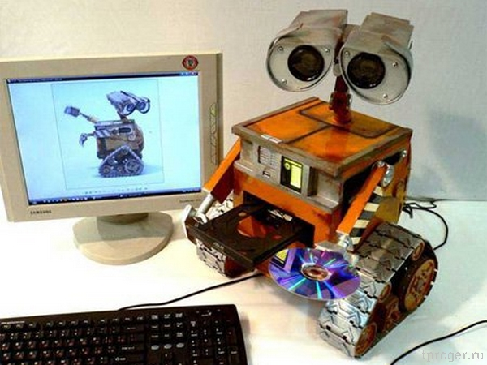
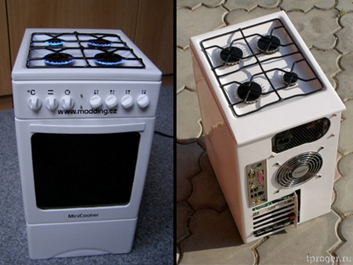
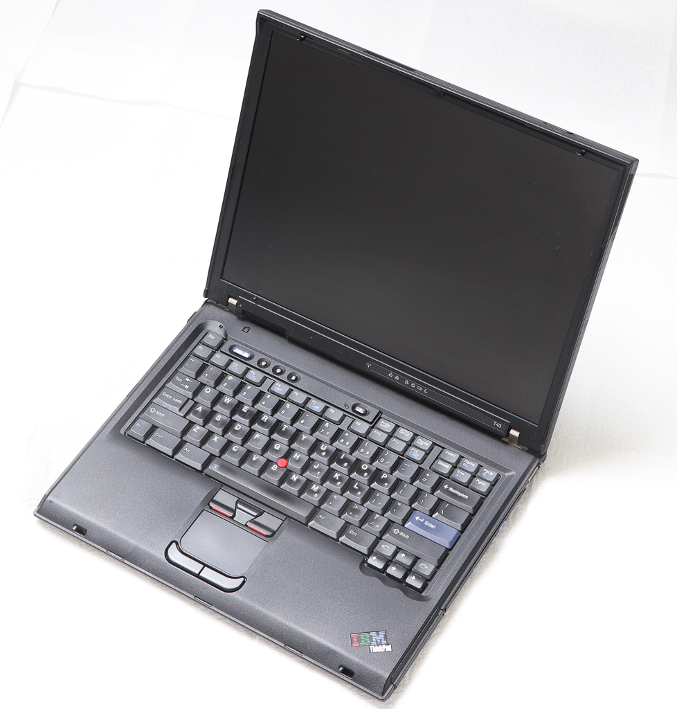
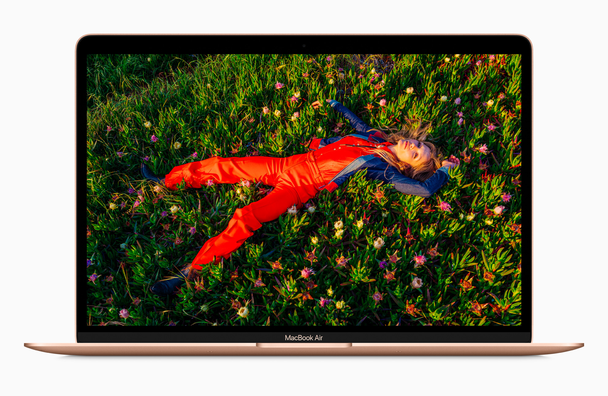

| Товар |
стоимость, руб. |
| Киборг убийца, бесстрашный робот компьютер, оснащённый лазером и гусеницами (идеален для российских дорог). Способен запустить Word, Excel, Powerpoint, а также картинки с котами.Прекрасно подходит для решения задачь по информатике типа "Исполнитель". Не прихотлив в ремонте, склонен убирать весь мусор который найдёт в кубы. Идеальный робот пылесос, прекрасно ладит с детьми. Первое эволюционное звено перед серийным выпуском терминаторов. |
50000 |
| Отличный компьютер 999 в 1. Пеките блины, варите борщи пока чудо юдо пекарня 9000 производит научные расчёты. Поговаривают, что колабок был создан благодаря научным расчётам этой станции. Данный девайс позволяет Вам не отрываться от компьютера даже во время приготовления пищи. Принят на вооружение ВС РФ. Идеальный подарок на 8 марта, 14 февраля и 12 июня. |
10000 |
 Легендарный и неповторимый ноутбук IBM thinkpad t43p- Одноядерный 32-битный Процессор Pentium M 750
- 512 мегабайт оперативной памяти DDR2
- Видеокарта ATI Mobility Radeon X300
- Жесткий диск 40 ГБ 5400RPM
- Экран 15 дюймов, IPS, разрешение 1400х1050
Ноутбук премиум бизнес линейки, из того времени когда понты не сверкали из всех щелей. Не смотря на то, что всё нужное уже придумано и присутсвует в нём, некторые яблочные компании считают, что людям вместо ноутбука нужен дорогущий алюминиевый лист бумаги с кучей переходников. Именно поэтому была создана куча пафосного неремонтопригодного железа за огромные деньги, для людей которым не надо работать. Самое страшное, что куче людей это нравиться и устройства подобного вида вошли в норму. Идеален для Вашего дедушки или бабушки.
|
1500 |
|  Одноразовое устройство для тех кому не надо работать, без возможности апгрейда и адекватного ремонто. Использовать до первой поломки после гарнтийного периода. Не смотря на то, что обычные usb порты ничего не весят и не такие толстые, вместо них используются два type c и Вам нужно будет купить переходник толще ноутбука и таскать его с собой для выполнения базовых рабочих задач. Цена оригинального переходника 7500 рублей и он всё равно не позволяет полноценно работать и вам нужно будет докупить еще 1 или купить не оригинаьный. |
130000 |